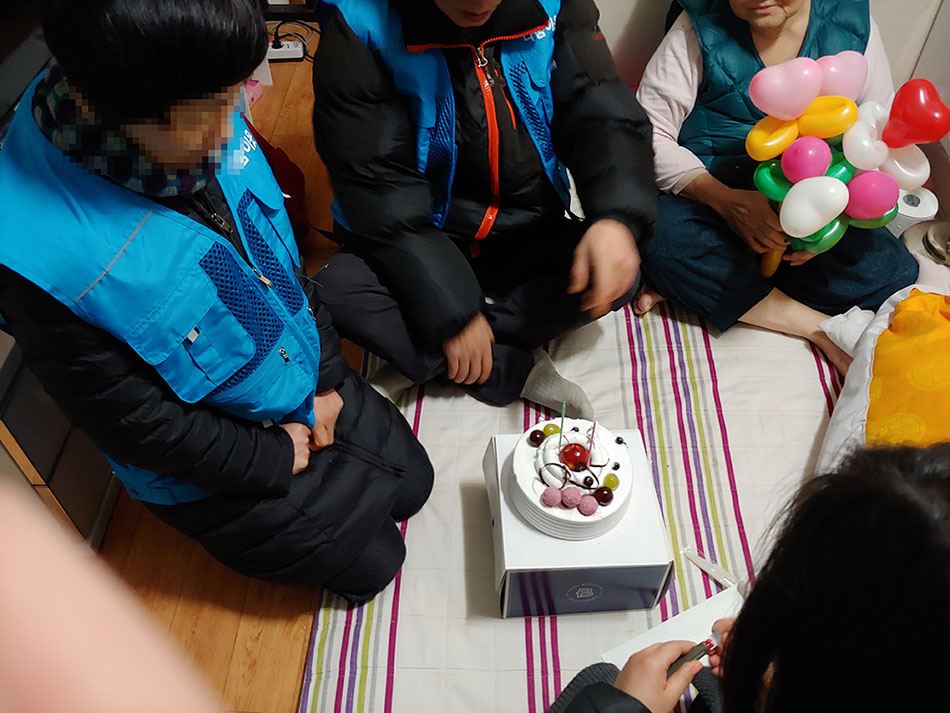
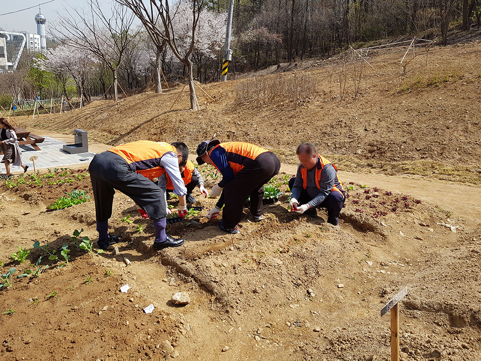
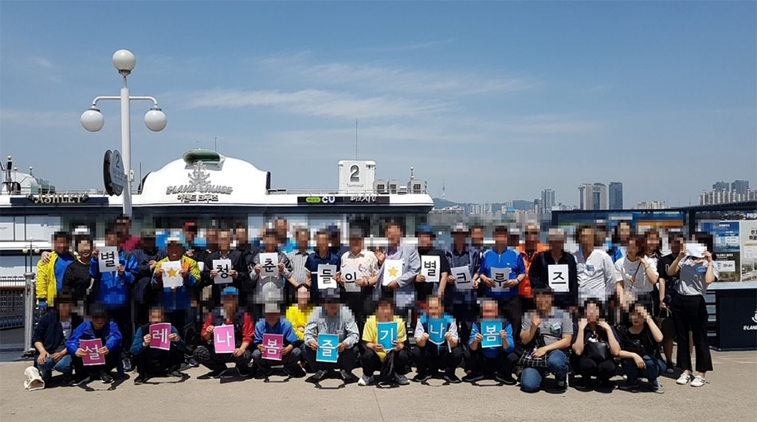
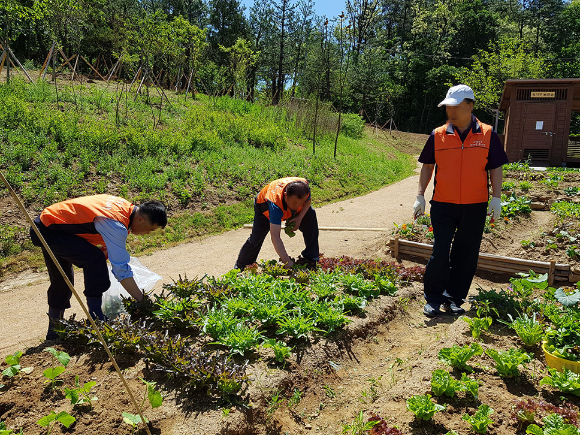
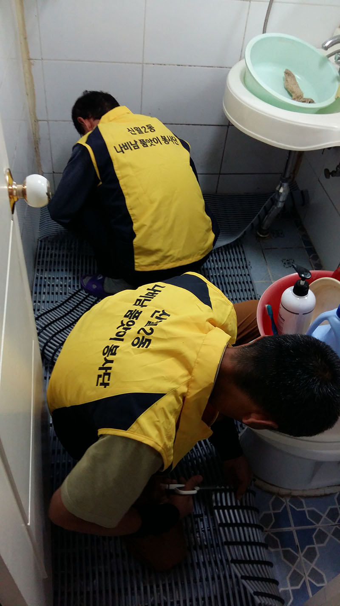
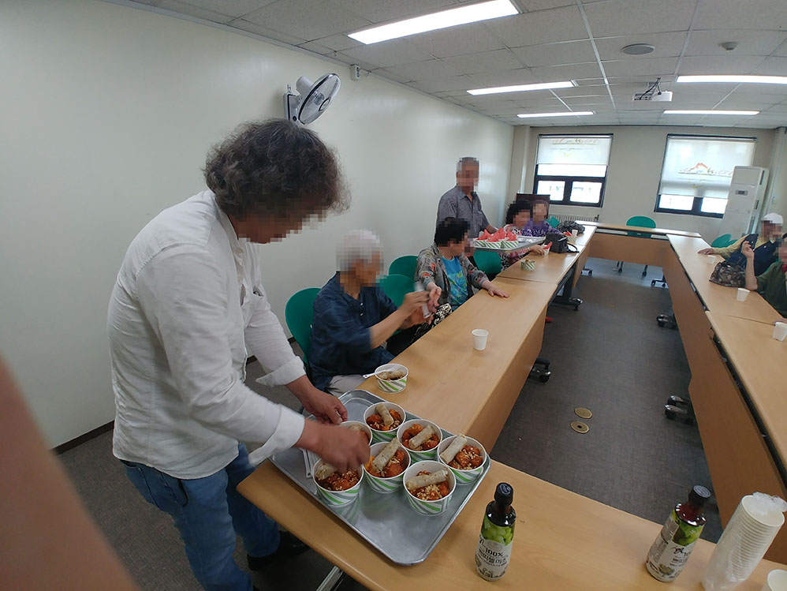
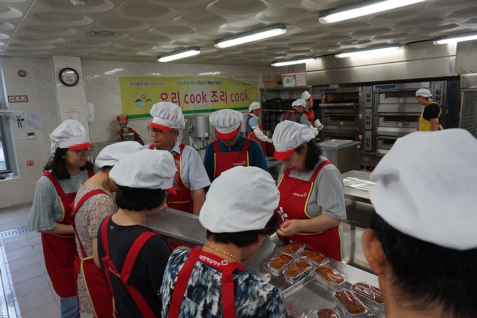
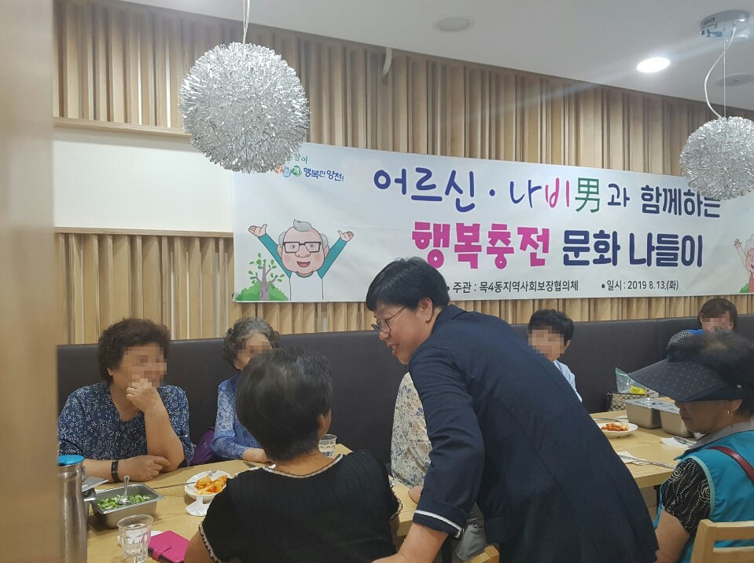
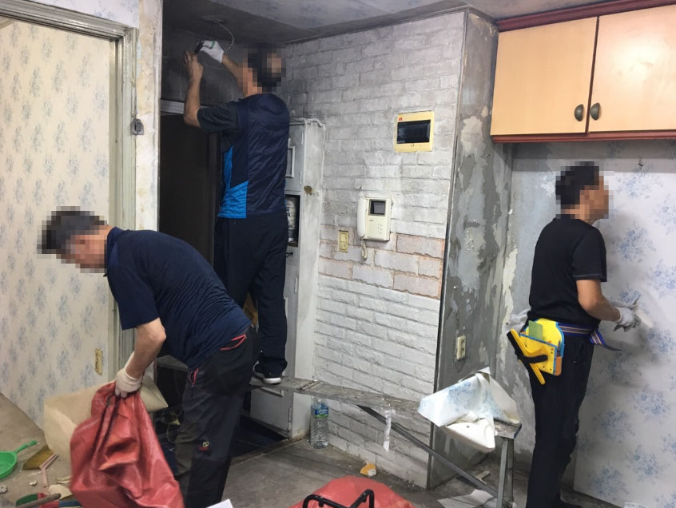
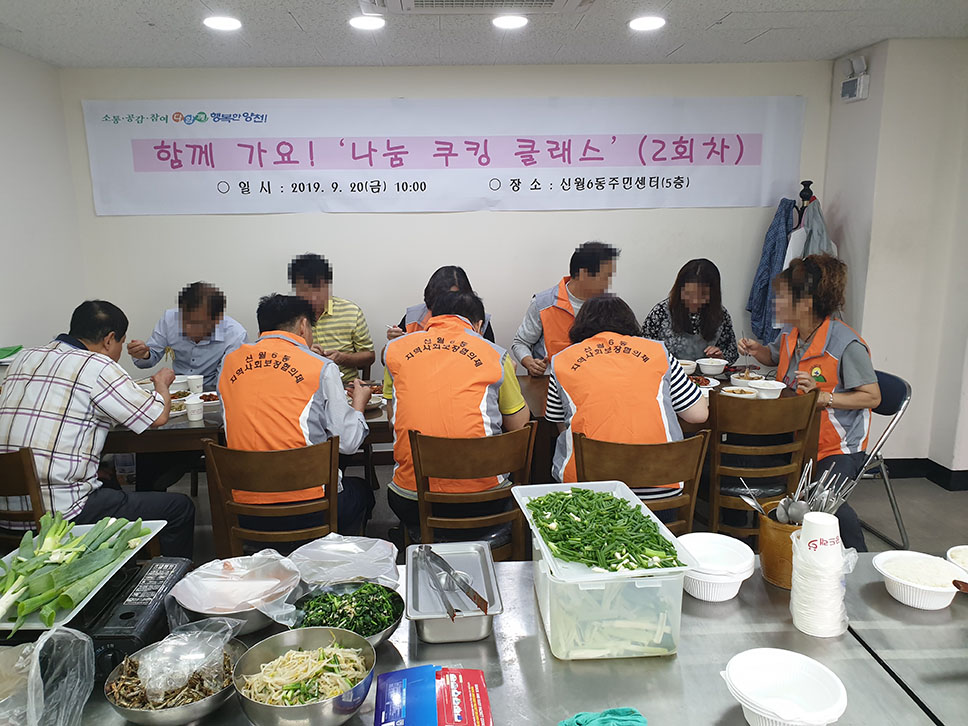

| 19 | 2019년 동주민센터 및 동지역사회보장협의체 활동 사진, 양천구 |  |
|
|
 2019년 01일 22일 목2동 나비남 파티플래너 봉사활동 사진, 양천구청  2019년 04월 16일 신월5동 나비남 텃밭활동 사진, 양천구청  2019년 05월 29일 신월2동 별별크루즈 한강 여행 활동 사진, 양천구청  2019년 05월 31일 신월5동 나비남 텃밭활동 사진, 양천구청  2019년 06월 11일 신월2동 나비남품앗이봉사단 미끄럼방지매트설치 봉사활동 사진  2019년 06월 12일 신정4동 나비남 음식조리 및 나눔 봉사활동 사진, 양천구청  2019년 06월 20일 신월7동 요리쿡조리쿡 적십자빵 만들기 봉사활동 프로그램 사진, 양천구청  2019년 08월 13일 목4동 어르신 나비남과 함께하는 행복충전 문화 나들이 행사 사진, 양천구청  2019년 08월 20일 목2동 나비남 화재복구 재능기부 활동 사진, 양천구청  2019년 09월 20일 신월6동 나눔 쿠킹클래스 프로그램 사진, 양천구청 |
|||